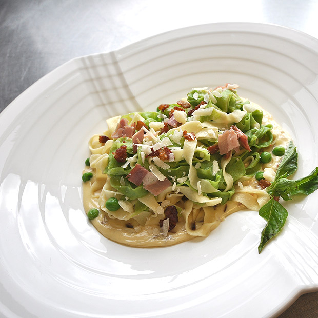

Serving Size
8 ounces (225 grams)
Yield
10 servings
https://recipes.jwu.edu/culinary/straw-and-grass-paglia-e-fieno/
Straw and Grass (Paglia e Fieon)
Ingredients
Main Dish
- 1 pound Basic egg pasta
- 1 pound Spinach pasta
- 4 ounces Olive oil
Sauce
- 8 ounces Bacon, diced
- 3 each Garlic cloves, peeled, smashed whole
- 6 ounces Onion or shallot, peeled, diced brunoise
- 1 quart Heavy cream
- 4 ounces Prosciutto, diced macédoine
- 3 to 4 ounces Parmesan cheese, grated
- Green peas, For garnish
Preparation
- Gather all the ingredients and equipment.
- Make pastas according to recipes.
- Blanch together, shock and oil and reserve.
- For the sauce: Render bacon with garlic. Bacon will be crispy and garlic golden in color. Discard garlic. Set bacon aside.
- Add onion or shallot and sauté.
- Add cream, prosciutto, and bacon and reduce until sauce coats a metal spoon.
- Add parmesan cheese and pasta and garnish with peas.